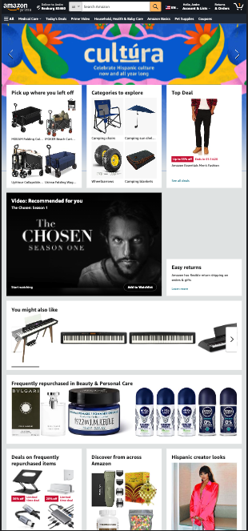
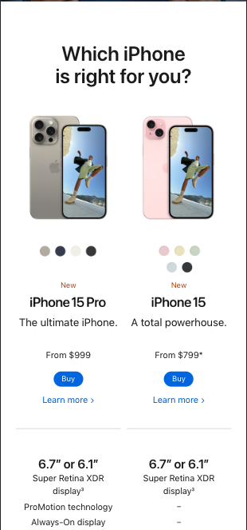
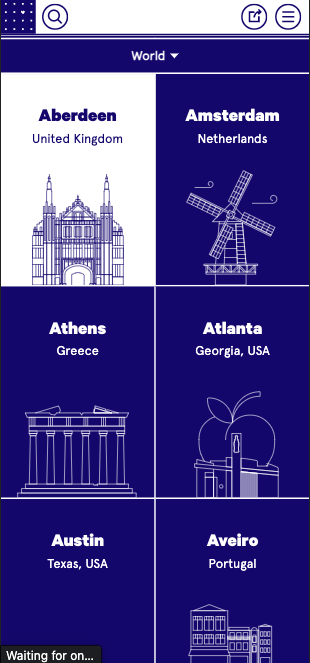

Rule of Thirds
 AmazonThis website has focused our attention in lines, at the top we can see suggestions based on things you have reascently searched. In the middle we see suggestions based on what you have searched the most, and lastly at the bottom we see general stuff that is offered to all of their customers.
White Space
 The Apple iPhone pageWhen comparing what iPhone to buy, apple hase done a good job on presenting their information in a way that is easy and understandable for the reader. There might be a lot of details to consider when choosing a phone, but they do not fill up the page with as much information as they can fit, it is intentional to focus on little facts at a time.
Contrast
 On The GridThis website compiles turistic information about vities around the world and presents it to users in a consice way. Their page is set so that when you hover over a button it will switch the colors, showing focus and creating interest for the viewer.